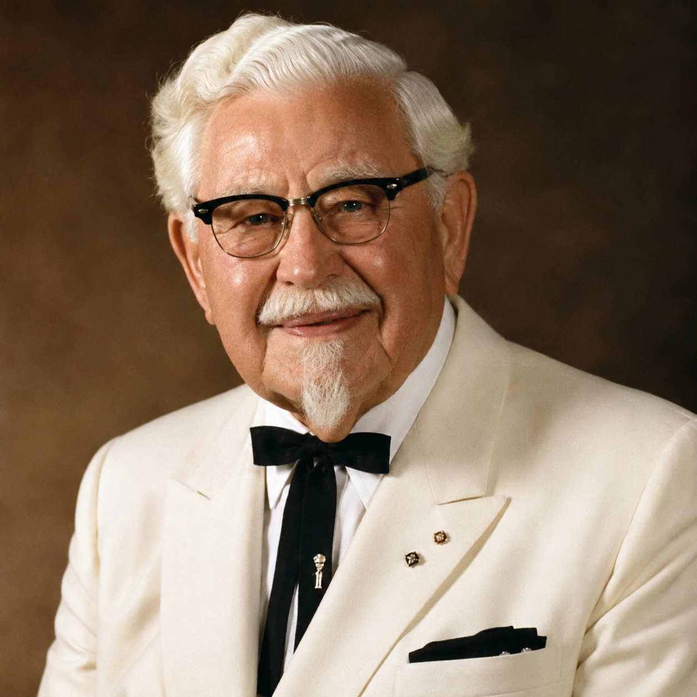
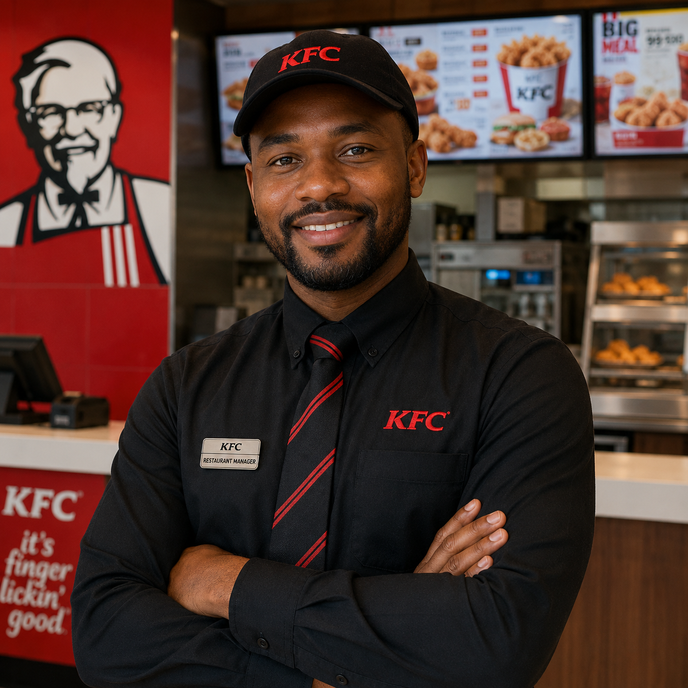
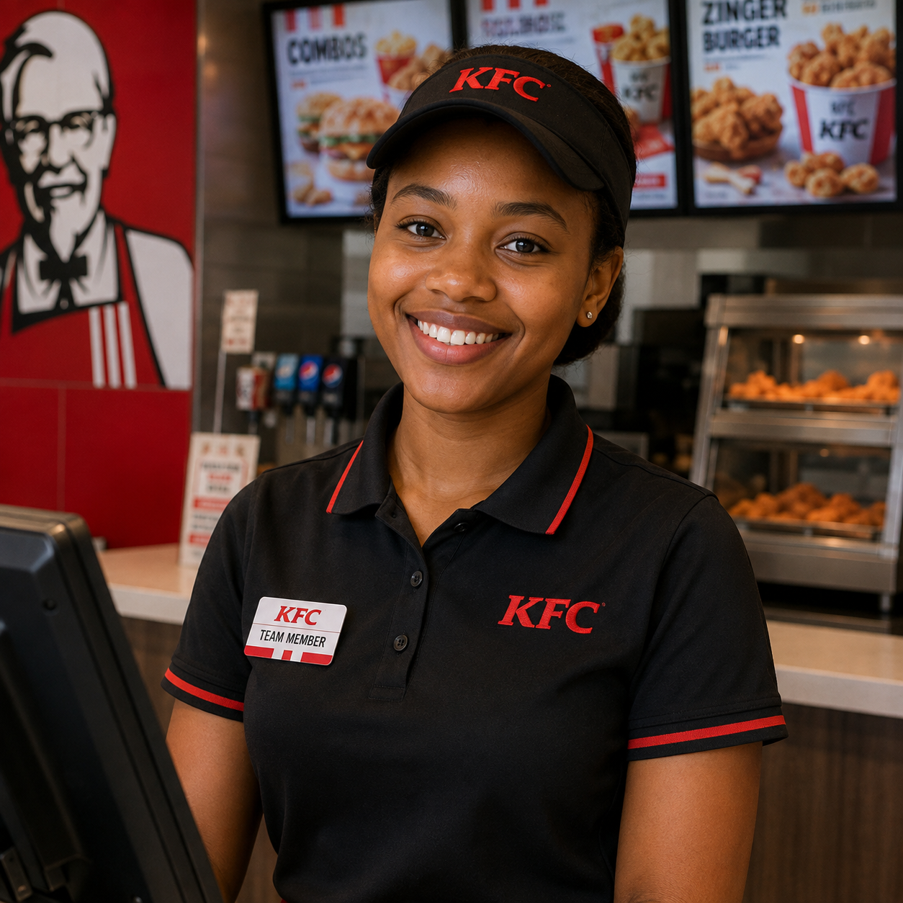

About KFC
KFC is one of the world's most well-known fast-food restaurants, specialising in fried chicken and a variety of tasty meals.
KFC focuses on providing customers with delicious food, friendly service and a convenient dining experience.
Our History

KFC was founded by Colonel Harland Sanders. He started selling his fried chicken in Kentucky, USA, and developed a unique recipe using a special blend of herbs and spices.
The first KFC franchise opened in the 1950s. Since then, KFC has grown from a small chicken restaurant into an international fast-food brand with restaurants in many countries around the world.
Today, KFC continues to serve its famous fried chicken while offering a variety of meals to suit different customers.
Our Mission
Our mission is to provide customers with delicious, high-quality food and excellent service while creating a welcoming experience for everyone.
Our Vision
Our vision is to remain a leading global fast-food restaurant by delivering great-tasting food, excellent customer service and memorable experiences.
Our Team
Our team is made up of dedicated employees who work together to provide customers with quality food and excellent service.

Restaurant Manager
The restaurant manager oversees the daily operations of the restaurant and ensures that customers receive excellent service.

Head Chef
The head chef is responsible for maintaining food quality and ensuring that meals are prepared according to KFC standards.
Customer Service Team
Our customer service team assists customers with orders and works to make every visit enjoyable.